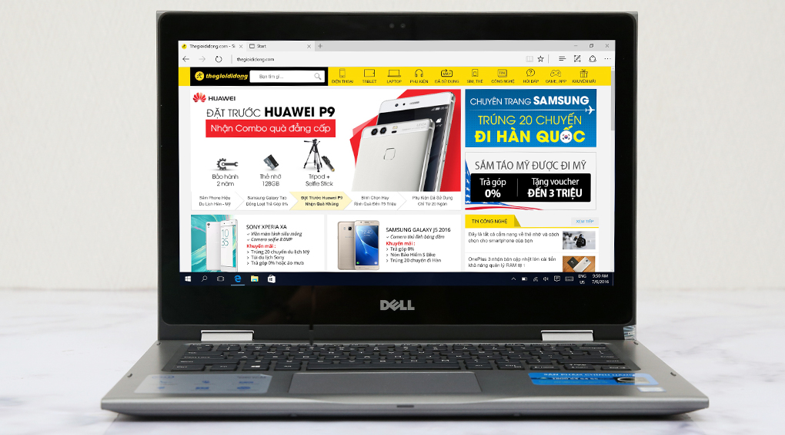

18.490.000
Thông số kỹ thuật CPU: Intel, Core i5 Skylake, 6200U, 2.30 GHz RAM: DDR4 (1 khe), 4 GB, 2133 MHz Đĩa cứng: SSD, 128 GB Màn hình rộng: 13.3 inch, FHD (1920 x 1080 pixels) Cảm ứng: Có Đồ họa: Intel® HD Graphics 520, Share (Dùng chung bộ nhớ với RAM) Đĩa quang: Không Webcam: 1 MP Chất liệu vỏ: Vỏ nhựa Cổng giao tiếp: 2 x USB 3.0, HDMI, USB 2.0 Kết nối khác: Bluetooth v4.0 PIN/Battery: Li-Ion 3 cell Trọng lượng: (Kg) 1.62 kg